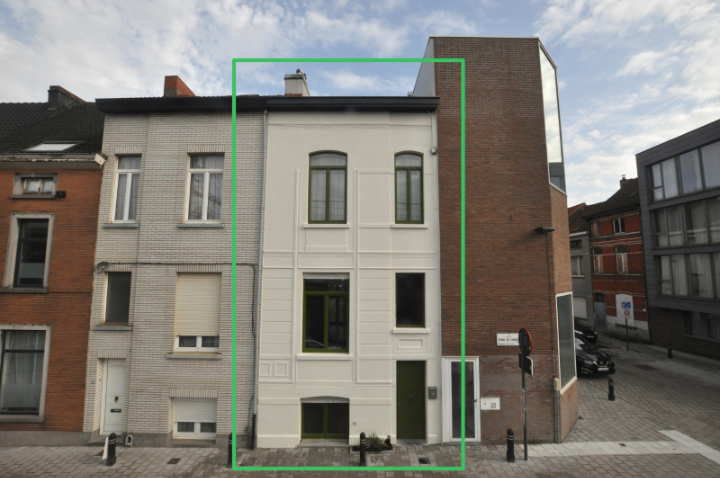
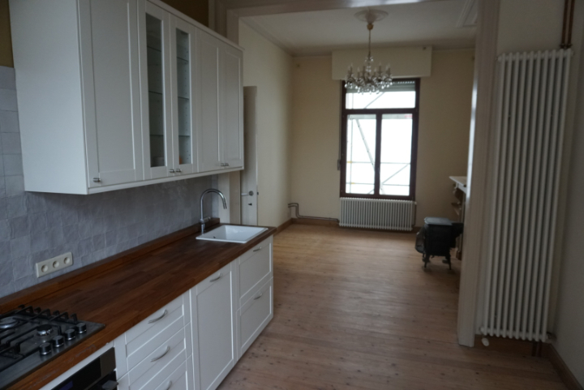
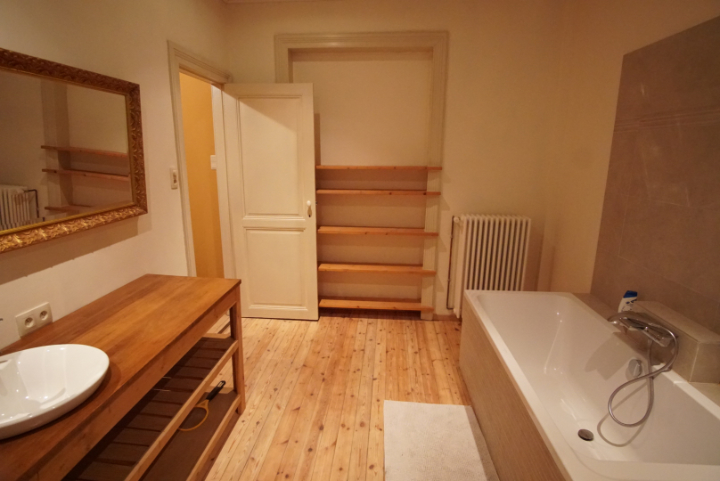
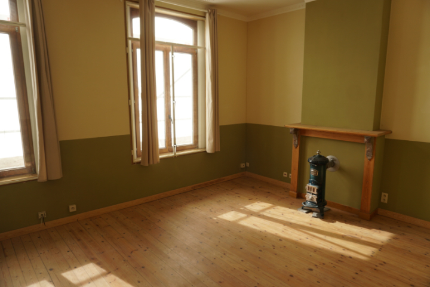
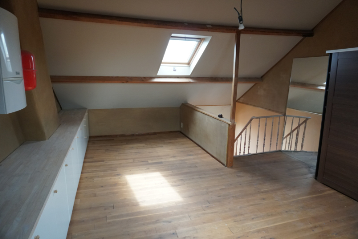
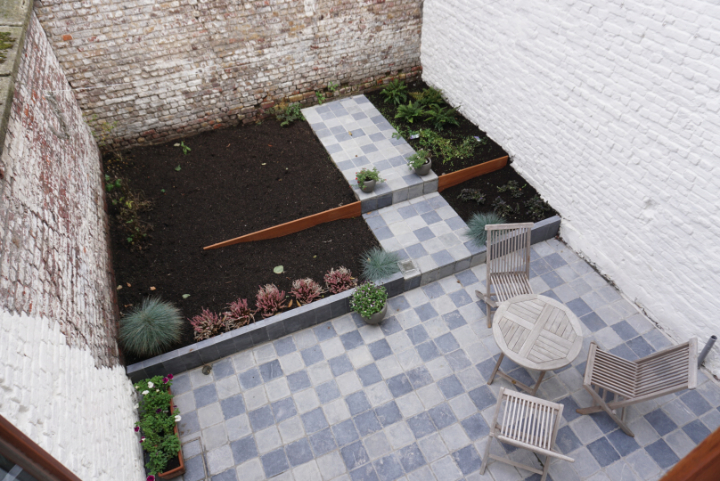

€289.000
75m2 grondoppervlakte
160m2 bewoonbare oppervlakte
bouwjaar 1935, gerenoveerd 2019
K.I. 513 euro —klein beschrijf mogelijk
te koop sinds: zondag 13 oktober 2019
Ik verkoop mijn huis
Ik woon al meer dan 20 jaar in Ledeberg, een fijne veilge buurt vlakbij centrum Gent die
al
een tijdje in opwaardering is — Ledeberg
leeft! Ik heb dit huis in
2006 gekocht, en het met veel zorg gerenoveerd, waarbij het authentieke karakter zoveel
mogelijk bewaard is. Nu ga ik samenwonen, en dus verhuis ik.
Indeling
klik voor meer foto's

4 foto's

3 foto's

4 foto's

4 foto's

3 foto's

5 foto's
Troeven
Volledig gerenoveerd
- dak: vervangen in 2007
- ramen: akoestisch dubbel glas, 2007
- verwarming: CV geeïnstalleerd in 2007
- keuken: vernieuwd in 2016
- badkamer: vernieuwd in 2018
- kelder: waterdicht en bekuipt in 2019
- tuin: aangelegd in 2019
- gevel: gerenoveerd in 2019
- elektriciteit: vernieuwd in 2007 en 2019 — zie keuringsverslag
Goede ligging
- snelwegen: op 1,5km van de E17 en E40
- openbaar vervoer: vlakbij tramlijn 4 en stations Sint-Pieters, Dampoort en Gentbrugge
- stadcentrum: op 5min van Gent Zuid
- buurt: rustig maar levendig, in opwaardering
- parking: plek genoeg, meestal pal voor de deur
Energiezuing
- CV: hoogrendement condensatiesketel
- ramen: overal dubbel hoogrendementsglas
- dak: glaswol isolatie, r-waarde 3
- bebouwing: gesloten
- EPC waarde: zeer goede score — zie keuringsverslag

Vragen & antwoorden
- ✤ Kan ik nog genieten van de woorden?
- Aan mijn kant zijn alle opzoekingen door de notaris al gebeurd. Alles hangt af van hoe snel jouw
bank is met het in orde brengen van de lening. Mijn bank zegt dat
eind deze maand ongeveer de deadline is. Dus ja, het kan nog, maar je zal niet te lang mogen wachten. Ik zou sowieso vooraf al eens met de bank gaan spreken over
de voorwaarden. - ✤ Ik heb op Google Maps gekeken, en de straat ziet er daar veel slechter uit
- Klopt; vroeger was dat zo. Maar stad Gent is al een tijdje bezig met stadsvernieuwing in
en rond Ledeberg. Recent is ook de Frans De Coninckstraat aangepakt, al zul
je merken dat nog niet alles afgewerkt is (de bloemenperken moeten hier en daar nog gedaan worden bijvoorbeeld). - ✤ Hoe is de buurt en de straat?
- Ik heb altijd graag gewoond in Ledeberg. Nooit heb ik me 's avonds onveilig gevoeld, auto inbraak of
vandalisme gezien(uitzonderlijk eens sluikstort, maar dat heb je
overal). Van de huidige buren heb ik nooit overlast (lawaai bv.). De straat is een woonerf met een maximumsnelheid van 20km/h. - ✤ Zijn er nog addertjes onder het gras?
- De notaris heeft alle opzoekingen gedaan; er zijn geen huurovereenkomsten, geen erfdienstbaarheden,
geen bouwovertredingen; bodemattest, watertoets, elektrische &
EPC keuring zijn in orde. Geen addertjes dus.